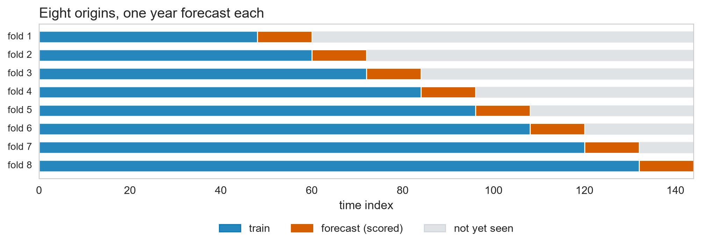
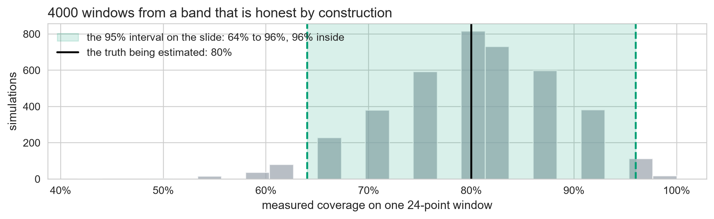

MAE RMSE MAPE % MASE RMSSE
Mean 173.67 175.55 51.82 12.66 9.09
Naive 37.07 42.46 11.64 2.70 2.20
Seasonal naive 15.24 17.56 4.55 1.11 0.91
Drift 44.35 49.02 13.86 3.23 2.54
STL + drift 9.62 12.30 3.01 0.70 0.64Forecast Evaluation & Cross-Validation
Day 2 · Lecture 3 · fpppy Ch 5.8–5.10, Ch 13
2026-09-06
You have 5 forecasts. Which is best?
- Lecture 1 built five: mean, naive, seasonal naive, drift, and the STL route
- Every one of them produced a number for every step of the horizon
- Nothing so far says which number to plan on
The deliverable is a reusable evaluation harness
Not “which model won today” but the code that answers it again next quarter, on a series nobody has seen yet.
A. Scoring a point forecast
Point forecast metrics
Every score starts from the same error
\[e_t = y_t - \hat{y}_t \qquad\text{(actual minus forecast)}\]
Three ways to average the same errors:
\[\text{MAE} = \text{mean}\lvert e_t \rvert \qquad \text{RMSE} = \sqrt{\text{mean}\left(e_t^2\right)} \qquad \text{MAPE} = \text{mean}\left\lvert \frac{100\,e_t}{y_t} \right\rvert\]
MAE and RMSE are in the units of the series. MAPE divides those units away. Whether that makes it safe is tested in a moment.
Day 1 pooled 148 series. What metric made that possible?
Day 1 ranked 148 retail series with very different turnovers in one table. That is only possible with a metric that does not care about the unit:
\[z_t = a\,y_t + b \;\Rightarrow\; \text{MAE}_z = a\,\text{MAE}, \qquad \text{MASE}_z = \text{MASE}\]
MAE and RMSE move with the unit. MAPE divides the unit away, but we will see that is not enough. MASE and RMSSE survive a change of unit - and they are the only two of the five that can be pooled.
The naive is the free benchmark
The naive is the free benchmark: no fitting, no parameters, and it is the “do nothing” baseline every forecast must beat.
\[\text{MASE} \;=\; \frac{\text{your MAE}}{\text{the naive forecast's own MAE}}\]
The naive’s MAE is Q
The naive carries the last value forward: \(\hat{y}_t = y_{t-1}\).
Substitute into MAE: the naive’s error is \(y_t - y_{t-1}\), so its own MAE is
\[\frac{1}{T-1}\sum_{t=2}^{T} \lvert y_t - y_{t-1} \rvert\]
Call it \(Q\):
\[\text{MASE} = \frac{\text{your MAE}}{Q}\]
\(Q\) is a training-set average, so it is near zero only if the series never moves.
MAPE’s denominator is a level
MAPE divides by a level, \(y_t\), and a level is not an error. Forecast \(\hat{y} = 100\), missed by \(20\) each way:
| actual \(y\) | error | absolute percentage error |
|---|---|---|
| \(80\), forecast too high | \(20\) | \(20 / 80 = 25.0\%\) |
| \(120\), forecast too low | \(20\) | \(20 / 120 = 16.7\%\) |
A level can also sit near zero: an actual of \(0.2\) and a one-unit miss scores \(500\%\). And it must have a true zero, which \(0\)°C does not.
Report it if asked. Never select a model with it.
One change of unit breaks two metrics
The table’s true-zero fault has an algebraic form. Re-express the series in any unit: \(z_t = a\,y_t + b\), with \(a > 0\).
\[e^z_t = (a\,y_t + b) - (a\,\hat{y}_t + b) = a\,y_t - a\,\hat{y}_t = a\,e_t\]
The error is clean. What each metric does with it:
\[\begin{aligned} \text{MAE}_z &= \text{mean}\lvert a\,e_t \rvert = a\,\text{MAE} \\ \text{MAPE}_z &= \text{mean}\left\lvert \frac{100\,a\,e_t}{a\,y_t + b} \right\rvert = \text{mean}\left\lvert \frac{100\,e_t}{y_t + \color{#FF7A5C}{b/a}} \right\rvert \quad \color{#FF7A5C}{\text{(offset is not cancelled)}} \\ \text{MASE}_z &= \frac{\text{mean}\lvert a\,e_t \rvert}{a\,Q} = \text{MASE} \end{aligned}\]
The \(a\) cancels in the MASE ratio; the \(b\) cancels inside every difference of \(Q\). MASE is the only one of the three that survives a change of unit.
The seasonal naive is the benchmark when \(m = 12\)
Step back a whole season instead of one period:
\[Q_m = \frac{1}{T-m}\sum_{t=m+1}^{T} \lvert y_t - y_{t-m} \rvert, \qquad m = 12\]
Set \(m = 1\) and this is the \(Q\) from the last slide. One definition, not two.
Squaring the same ratio gives RMSSE
\[\text{RMSSE} = \sqrt{\text{mean}(q_j^2)}, \qquad q_j^2 = \frac{e_j^2}{\dfrac{1}{T-m}\sum_{t=m+1}^{T} (y_t - y_{t-m})^2}\]
Same benchmark, same cancellation, squared throughout.
MASE reports the typical miss in benchmark units. RMSSE reports the same with the worst misses weighted heaviest, so a model can win one and lose the other.
Only two of the five can be pooled
| Definition | Verdict | |
|---|---|---|
| MAE, Mean Absolute Error | mean of \(\lvert e_t \rvert\) | Easy to read, and scale-dependent: cannot be pooled |
| RMSE, Root Mean Squared Error | \(\sqrt{\text{mean}(e_t^2)}\) | Punishes large errors, still scale-dependent |
| MAPE, Mean Absolute Percentage Error | mean of \(\lvert 100\,e_t / y_t \rvert\) | Unit-free, but explodes near zero and is asymmetric |
| MASE, Mean Absolute Scaled Error | MAE over the benchmark’s own MAE | Scale-free; reads only against its benchmark |
| RMSSE, Root Mean Squared Scaled Error | RMSE over the benchmark’s own RMSE | Scale-free, and still punishes outliers |
On this window, STL wins every metric
On this window the STL route wins on every metric (\(\text{MASE} = 0.70\)), with the seasonal naive second at \(1.11\). Hold that thought until part B.
B. One split is not evidence
Rolling-origin cross-validation
One window is one lucky year
One split24 months, scored once One number per modelno error bar No rankingwhatever those two years did is baked in
Time series cannot use ordinary k-fold: shuffling the rows puts future months into the training set. Move the split forward instead.
Score the model eight times, not once
The origin is where training stops and the forecast starts. Move it forward a year at a time: eight training sets, eight forecasts, eight scores.

A fold trains only on its own past: no fold peeks into its future.
One knob comes from the business
h is the planning horizon. The other two are what the series affords.
Eight folds move the winner

One window crowned STL + drift at 0.70. Eight folds hand it back, 1.18 to 1.22.
C. Does the band keep its promise?
Checking an interval
An 80% band is a claim you can check
An interval forecast \([L_{t+h|t},\; U_{t+h|t}]\) says one thing, and it is checkable:
\[\mathbb{P}\left(L_{t+h|t} \le y_{t+h} \le U_{t+h|t}\right) = 0.80\]
Nominal is what the model promised: 8 in 10. All five models in this deck make the same promise about their own band.
Coverage is counting, not statistics
Make \(100\) forecasts. Count how many actuals landed inside the band.
| inside | coverage | verdict |
|---|---|---|
| \(78\) | \(78\%\) | honest, close to the claim |
| \(62\) | \(62\%\) | under-covering: bands too narrow |
| \(95\) | \(95\%\) | over-covering: bands too wide |
The attempts are in the denominator. One 24-month window gives 24 of them, and 24 attempts cannot measure a rate.
Why one test window is misleading
\[\text{SE} = \sqrt{\frac{p(1-p)}{n}} = \sqrt{\frac{0.8 \times 0.2}{24}} \approx 8\%\]
\[\Longrightarrow \qquad \text{95% CI on 80% coverage: } [64\%, 96\%]\]
Single Holdout (\(n = 24\)) Coverage measures 96% by chance alone. You cannot validate coverage on a single slice.
8-Fold CV (\(n = 96\))
- Gaussian: 77%
- Bootstrap: 61%
- Conformal: 83%
Methods separate cleanly.
The seasonal naive’s band is honest

The seasonal naive lands at 77%, close to the 80% it claimed. The mean model covers 0%, on a series that grew sixfold.
Coverage checks the band. It cannot rank.
Coverage answers one question: is the 80% band honest?
\[\text{coverage}\big([-\infty,\; +\infty]\big) = 100\%\]
It prices no width, so two models at 80% coverage can be worlds apart.
To rank two bands you need a score that prices width and misses in one number. Building it starts with a single quantile.
D. Scoring the whole distribution
Quantile loss, Winkler, CRPS
A band is two quantiles
The \(\alpha\)-quantile \(\hat{q}_\alpha\) is the value the forecast puts \(\alpha\) of its probability below:
\[P(y \le \hat{q}_\alpha) = \alpha\]
LEVELS : [20, 40, 60, 80, 95]
QUANTILES: [0.025 0.1 0.2 0.3 0.4 0.6 0.7 0.8 0.9 0.975]An 80% band is the pair \(\hat{q}_{0.10}\) and \(\hat{q}_{0.90}\): the columns lo-80 and hi-80, all along.
A quantile miss must cost more on one side
If you forecast the \(0.9\) quantile, the actual should come in below it nine times out of ten. Landing below is the job, not a failure.
\[L_\alpha(\hat{q}, y) = \begin{cases} \alpha \, (y - \hat{q}) & \text{if } y \ge \hat{q} \quad \text{(underestimated)} \\ (1 - \alpha) \, (\hat{q} - y) & \text{if } y < \hat{q} \quad \text{(overestimated)} \end{cases}\]
At \(\alpha = 0.9\) the slope to the right is \(0.9\) and to the left is \(0.1\): the same miss, priced nine times apart.
At \(\alpha = 0.5\), quantile loss is MAE

Put \(\alpha = 0.5\) in both lines: each side is \(0.5\lvert y - \hat{q}\rvert\). That is MAE, halved. Minimising it finds the median forecast.
The Winkler score is two quantile losses, summed
Write \(c\) for what a band claims, so \(c = 0.8\) here. It leaves \(1-c\) outside, split between the tails, and its edges are \(\hat{q}_{(1-c)/2}\) and \(\hat{q}_{(1+c)/2}\): the \(0.10\) and \(0.90\) quantiles again.
\[\text{Winkler}([\ell, u], y) = \frac{L_{(1-c)/2}(\ell, y) + L_{(1+c)/2}(u, y)}{(1-c)/2}\]
Nothing new is being defined. It is the previous slide’s loss, applied twice.
Inside the band the charge is the width
\[\text{Winkler} = \begin{cases} (u - \ell) & \text{inside the band} \\ (u - \ell) + \frac{2}{1-c} (\ell - y) & \text{missed low } (y < \ell) \\ (u - \ell) + \frac{2}{1-c} (y - u) & \text{missed high } (y > u) \end{cases}\]
Winkler prices the trade: narrow bands win when the actual lands inside, and pay a heavy linear fine for every unit outside.
Averaging the whole ladder gives CRPS
Average over all of them and you have scored the whole forecast distribution:
\[\text{CRPS} = \int_0^1 2 \, L_\alpha(\hat{q}_\alpha, y) \, d\alpha \quad \approx \quad \frac{1}{\lvert\text{quantiles}\rvert} \sum_{\alpha} 2 \, L_\alpha(\hat{q}_\alpha, y)\]
Here \(\alpha\) is the quantile level again, running over the whole ladder.
Scaled CRPS is to CRPS what MASE is to MAE
Divide by the seasonal naive benchmark’s own CRPS, and the score is free of the series’ units:
Scale-free and sortable across a portfolio, for the same reason MASE was: an error over an error.
Narrow is not the same as good
Mean width is Winkler’s \(u - \ell\), the height of the 80% band, averaged over all 96 scored points:

The STL route’s intervals are the narrowest here, and it still loses on CRPS. Narrowness that is not earned gets charged for.
E. Ways a good harness still lies
Leakage, and the traps that survive it
Leakage is a model seeing its own future
Scale on the whole seriesscaler.fit(spine) the holdout sets the scale Centred rolling featuresrolling(12, center=True) month \(t\) has already seen \(y_{t+6}\) Tune on the test setkeep trying until the score improves
The answer is in the inputCV flatters, production does not
Four ways an honest team still fools itself
| the trap | how you catch it |
|---|---|
| Regime change | old folds disagree with recent ones |
| Underpowered sample | fewer than about 50 scored points |
| Overlapping folds | step_size < h reuses holdout points |
| Data gaps | timestamps not continuous across origins |
\(\rightarrow\) Lab E · Score them honestly
Open labs/02_day2_toolbox_and_evaluation.ipynb
| 2.4 | Scoring, and the metric that lies | 10 min |
| 2.5 | The harness | 19 min |
29 minutes. The notebook carries the instructions; work down it in order.
Same notebook as Labs C and D, pick up at Exercise 2.4. 2.5 writes labs/leaderboard.csv, which every Day 3 model plugs into. Do not skip it.
Day 2 Summary
- Start with the four benchmarks, then the decomposition route
- Diagnose residuals: uncorrelated, zero mean
- Report intervals, and know which assumption each one spends
- Score with MASE, scaled CRPS, over rolling origins
- One window picks winners it cannot defend
Seasonal naive, MASE 1.18, scaled CRPS 0.031. That is the number to beat. And its residuals are not white noise, so it is beatable. Day 3 starts there.
Reminder: a rate measured on 24 points wanders

Every window here came from a perfect 80% band. Anything from 64% to 96% is what that band looks like on 24 points. Back